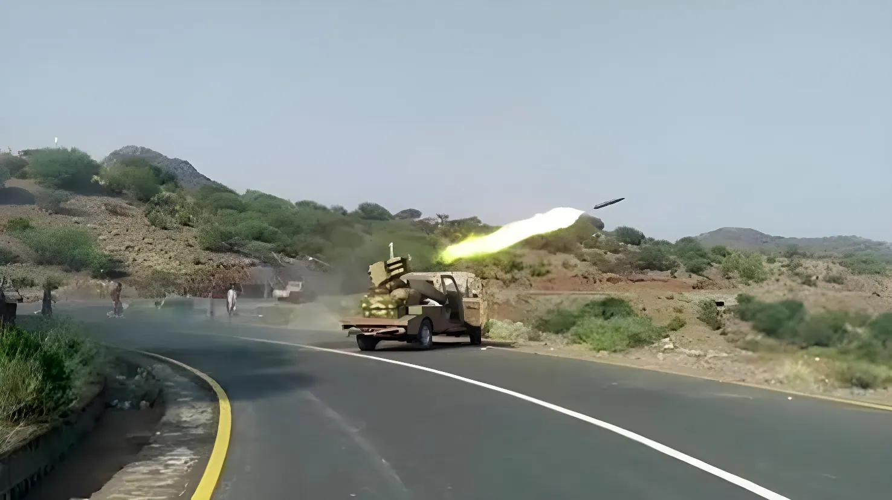

La trêve de 2022 entre Riyad et les rebelles houthis du Yémen, jusqu'ici largement respectée, a volé en éclats depuis juillet 2026. Blocus maritime, frappes sur les installations pétrolières d'Aramco, chute de la ville portuaire de Mokha : en une semaine, le conflit a connu son pic de tensions le plus élevé depuis quatre ans, faisant grimper le baril de Brent au-dessus de 100 dollars.
Depuis 2014, le Yémen est le théâtre d'une guerre civile opposant les rebelles houthis, soutenus par l'Iran, au gouvernement yéménite internationalement reconnu, appuyé depuis 2015 par une coalition militaire menée par l'Arabie saoudite. Un cessez-le-feu négocié sous l'égide de l'ONU en 2022 avait permis une accalmie durable, sans qu'un accord de paix formel ne soit jamais signé. Cet équilibre fragile s'est brisé le 13 juillet 2026 : les Houthis ont frappé l'aéroport international d'Abha, dans le sud du royaume, en représailles à une attaque, attribuée à l'Arabie saoudite, contre l'aéroport de Sanaa, capitale tenue par les rebelles. Cette frappe saoudienne faisait elle-même suite à l'organisation par les Houthis de vols directs entre l'Iran et Sanaa, jugée par Riyad et le gouvernement yéménite comme une violation de la souveraineté du pays.
Le 20 juillet, les Houthis annoncent un blocus maritime visant l'Arabie saoudite avec effet immédiat, le présentant comme une réponse au blocus terrestre, aérien et maritime que Riyad impose selon eux aux zones sous leur contrôle depuis près de douze ans. Quelques jours plus tard, les rebelles revendiquent des frappes de drones et de missiles contre des installations du géant pétrolier Aramco à Jizan et Yanbu ; la coalition saoudienne réplique en bombardant le port de Hodeïda, poumon logistique des zones houthies sur la mer Rouge. Dès le début du mois d'août, les combats se concentrent autour du port stratégique de Mokha, visé par plus de vingt-cinq missiles en quelques jours seulement.
Les Houthis frappent l'aéroport d'Abha en riposte à une attaque saoudienne sur l'aéroport de Sanaa. Première confrontation directe depuis la trêve de 2022.
Annonce d'un blocus maritime houthi « à effet immédiat » contre l'Arabie saoudite, premier exportateur mondial de brut.
Frappes houthies revendiquées contre des sites Aramco à Jizan et Yanbu. Riposte saoudienne sur le port de Hodeïda.
Intensification des combats autour de Mokha, port stratégique de la mer Rouge, cible de plus de 25 missiles en quelques jours.
La coalition saoudienne frappe la prison d'Al-Hazm, dans le gouvernorat d'Al-Jawf (nord du Yémen) : au moins 11 morts selon un responsable provincial, un bilan que certaines sources portent à 23.
Attaque houthie massive sur quatre villes saoudiennes ; représailles saoudiennes revendiquées : plus de 40 frappes aériennes au Yémen.
Les Houthis prennent le contrôle de Mokha et avancent vers le détroit de Bab el-Mandeb. Le Brent dépasse 100 dollars le baril.
Mardi 8 septembre, les Houthis mènent leur offensive la plus importante contre le territoire saoudien depuis la trêve de 2022 : des dizaines de drones et de missiles balistiques visent simultanément quatre villes du sud du royaume — Abha, Najran, Jizan et Khamis Mushait — frappant des installations du groupe pétrolier Aramco ainsi que la base aérienne du roi Khalid. Le bilan s'élève à au moins 73 blessés civils, dont des femmes et des enfants, tandis que plusieurs sites pétroliers et services publics suspendent temporairement leurs activités, les pompiers luttant pour maîtriser les incendies. Les Houthis présentent cette opération comme une réponse à la frappe saoudienne du 7 septembre contre la prison d'Al-Hazm.
Dès le lendemain, mercredi 9 septembre, les rebelles font état de plus de quarante frappes aériennes saoudiennes en représailles, réparties entre les gouvernorats de Marib, d'Al-Jawf, de Taëz et de Hodeïda. Selon un décompte de l'AFP établi à partir de plusieurs sources, les combats au sol ont fait plus de 500 morts, en grande majorité des combattants, depuis la reprise des hostilités début septembre. Les médias houthis annoncent la poursuite des frappes contre les « artères économiques » saoudiennes tant que Riyad ne cessera pas ses opérations militaires et ne lèvera pas son blocus sur les ports et aéroports sous contrôle houthi.
| Acteur | Position | Intérêt principal |
|---|---|---|
| Houthis | Blocus maritime, frappes sur Aramco | Lever le blocus, forcer l'arrêt des opérations saoudiennes |
| Arabie saoudite | Frappes aériennes de représailles | Sécuriser son territoire et ses infrastructures pétrolières |
| Gouvernement yéménite (reconnu) | Coalition avec Riyad | Reconquête territoriale, légitimité internationale |
| Iran | Soutien logistique aux Houthis | Pression sur le Golfe, levier régional |
| Marchés pétroliers | Prime de risque en hausse | Sécurité des routes Ormuz / Bab el-Mandeb |
Jeudi 10 septembre, les rebelles houthis prennent le contrôle de Mokha, ville portuaire stratégique de la mer Rouge tenue jusqu'alors par le gouvernement yéménite, et poursuivent leur progression vers le détroit de Bab el-Mandeb. Cette avancée est d'autant plus sensible que ce passage, qui relie la mer Rouge au golfe d'Aden, est devenu une route de contournement essentielle pour le pétrole saoudien depuis que le détroit d'Ormuz, à l'autre extrémité de la péninsule Arabique, est fragilisé par la guerre entre l'Iran, les États-Unis et Israël. La perspective d'un verrouillage simultané des deux détroits fait craindre aux analystes un choc énergétique mondial d'une ampleur inédite.
« Cela ressemble à une escalade majeure, et les tensions sont montées d'un cran. »
— Andreas Krieg, King's College de Londres, cité par l'AFP« Les prix du pétrole chuteront nettement quand nous gagnerons la guerre contre l'Iran. »
— Donald Trump, Truth Social, 7 septembre 2026Le ministère saoudien des Affaires étrangères a de son côté averti de « conséquences » si les Houthis continuaient de cibler des civils, appelant à un arrêt immédiat de l'escalade, sans préciser la nature des mesures envisagées. Sur les marchés, le Brent a grimpé de plus de 1,6 % dès l'annonce des frappes du 8 septembre, avant de franchir la barre des 100 dollars le baril deux jours plus tard, porté à la fois par la progression houthie vers Bab el-Mandeb et par la persistance des tensions autour d'Ormuz. La production pétrolière saoudienne, qui avait légèrement remonté en juillet, a déjà reculé en août selon le rapport mensuel de l'OPEP, signe des difficultés du royaume à maintenir ses niveaux d'exportation sous la pression des attaques.
En l'espace de deux mois, le front saoudo-houthi est passé d'incidents isolés à un affrontement ouvert touchant simultanément le territoire saoudien, les infrastructures pétrolières et les routes maritimes mondiales. La prise de Mokha place désormais les Houthis aux portes de Bab el-Mandeb, seconde artère énergétique du Moyen-Orient après Ormuz — déjà fragilisée par la guerre irano-américaine. Pour Riyad, l'enjeu dépasse le seul dossier yéménite : il s'agit de préserver la crédibilité de sa diplomatie régionale et la stabilité de ses revenus pétroliers, alors même que le royaume mise sur son plan Vision 2030 pour diversifier son économie. Pour les marchés mondiaux, la perspective d'un verrouillage conjoint des deux détroits reste, au 10 septembre 2026, le scénario le plus redouté.